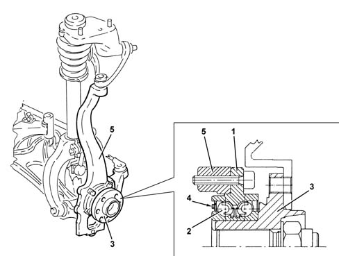

4450C front wheel hubs
- Path
- Descriptions > 44 SUSPENSION AND WHEELS > 4450 WHEELS AND HUBS > 4450C front wheel hubs
- Kind
- system description
- Applies to
- engines: 1.6 TS, 2.0 TS; all production periods
- Interactive page
- https://sloeber94.github.io/elrnDB-a147/en/#/3022510
Applies to: engines: 1.6 TS, 2.0 TS; all production periods
SPECIFICATIONS:
VIEW OF ASSEMBLY

1 - Outer anchorage flange 2 - Bearing 3 - Hub 4 - Multi-pole magnetic ring 5 - Suspension vertical link
CONSTRUCTION FEATURES
The front wheel hubs consist of an outer attachment flange, a bearing and a wheel attachment hub. The outer flanges are secured by bolts to the suspension vertical links, and also act as an outer cage for the bearing. The wheel hub is in turn installed in the bearing's inner cage. A magnetic multi-pole ring is fitted on the ring of the bearing's inner cage. Its function is to indicate the movement of the wheels to the active sensor of the ABS 3340 A(B.S. ANTI-LOCK BRAKING SYSTEM .).